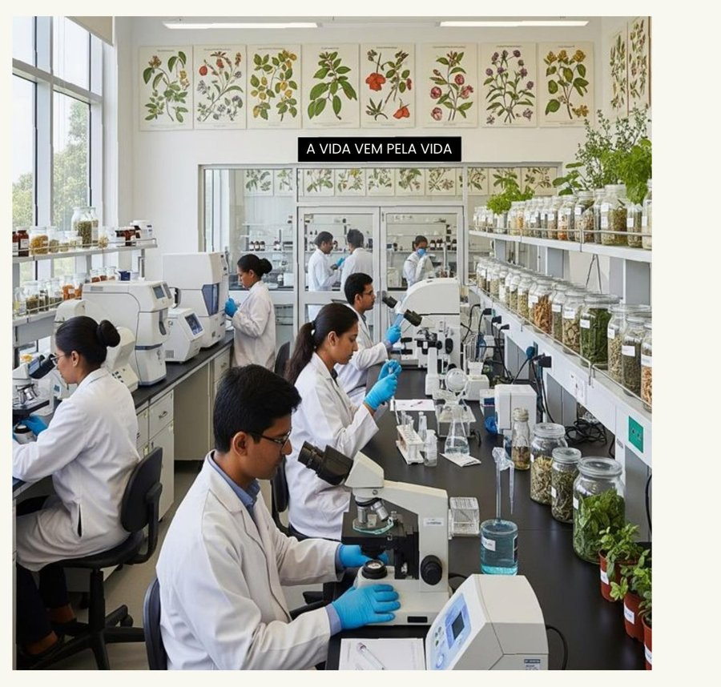
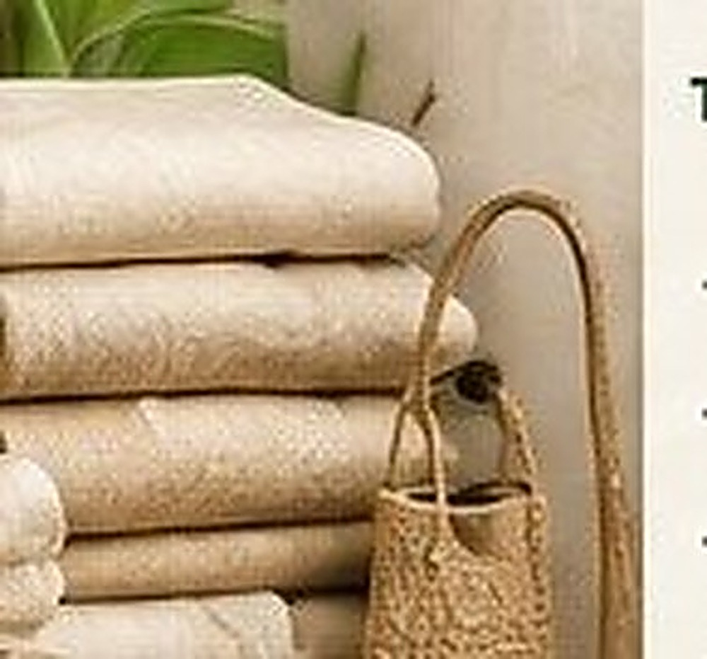
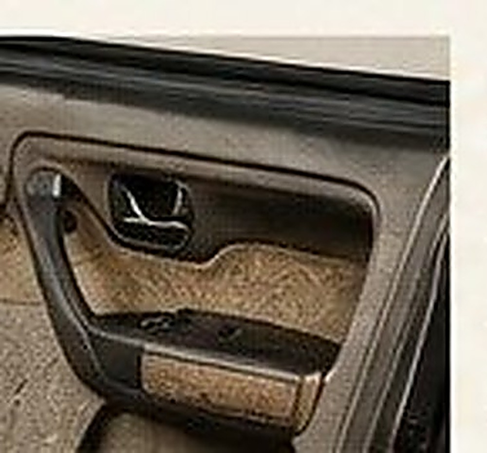
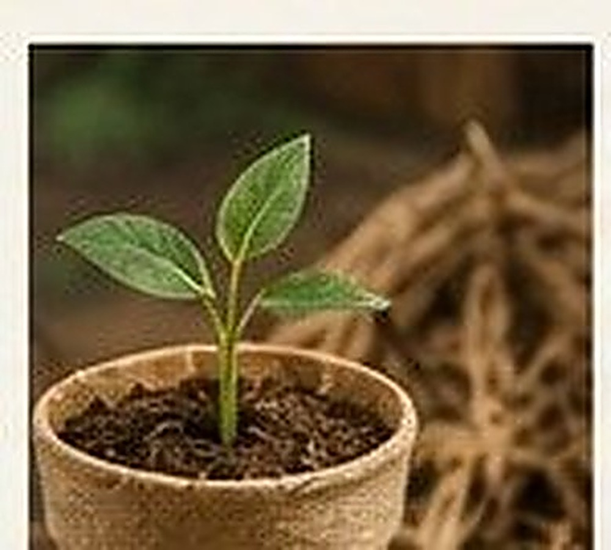

Foliares de alta resistência
Bananeira, sisal, curauá, piassava — força para aplicações industriais e têxteis.
Pesquisa, Desenvolvimento e Investimento em tecnologias naturais — transformando resíduo agrícola brasileiro em soluções que já substituem plástico, fibra de vidro e insumos sintéticos.
A TYPY atua com P&D de biomateriais a partir do princípio da sustentabilidade e da produção otimizada. A partir de uma semente, a natureza produz raízes, caules, galhos, folhas, flores, frutos e novas sementes — e cada um desses recursos pode ser aproveitado de forma inteligente na cadeia produtiva de inúmeros segmentos de mercado.

Mapeamos a biodiversidade brasileira de fibras e organizamos o que cada família já entrega hoje em desempenho e aplicação.
Bananeira, sisal, curauá, piassava — força para aplicações industriais e têxteis.
Rami, juta, malva, bananeira, algodão colorido nativo — fios e tecidos para a moda do futuro.
Capim dourado, arumã, buriti, tucumã — beleza e identidade dos biomas brasileiros.
Bananeira, bagaço de cana, fibra de coco, malva — embalagens e papéis sustentáveis.
Sisal, curauá, fibra de coco, bambu, kenaf — substituem plástico e fibra de vidro.
Buriti, piaçava, ouricuri, taboa, arumã — tradição e design em peças únicas.
Caju, açaí, arroz, milho, cana-de-açúcar — resíduos que viram matéria-prima.
E o mapeamento continua — a cada novo parceiro, novas fibras entram na rede.
Seis frentes de aplicação já validadas — veja exemplos prontos no Marketplace.






Pesquisadores, universidades e laboratórios parceiros são bem-vindos na rede de P&D da TYPY.